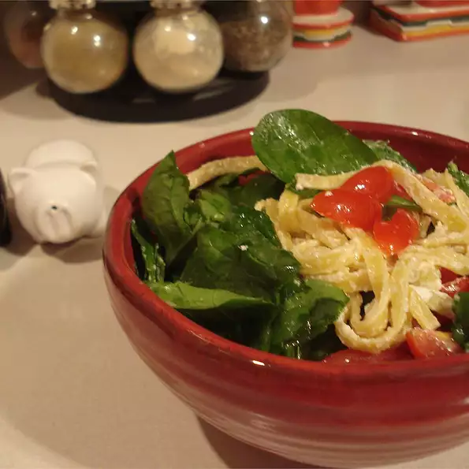

Pasta Carcione

Description
Bow tie pasta tossed with spinach, tomatoes, goat cheese and olive oil.
This is the best pasta recipe in the world! I made it up one day instead
of serving a heavy pasta dish. The goat cheese makes this recipe!
Ingredients
- 10 ounces spinach, rinsed
- 1 (16 ounce) package bow tie pasta
- ¼ cup olive oil
- salt and pepper to taste
- 2 ½ cups cherry tomatoes, quartered
- 8 ounces crumbled goat cheese
Directions
-
Remove stems from spinach and stack leaves together; chop thin longer
strips instead of square chops and set aside.
-
Bring a large pot of lightly salted water to a boil. Add pasta and cook
for 8 to 10 minutes or until al dente; drain and place in a large bowl.
-
Drizzle olive oil over pasta and add salt and pepper to taste, spinach
and tomatoes; gently toss.
- Add goat cheese and serve warm or room temperature.
Volver a Home
Pagina Siguiente